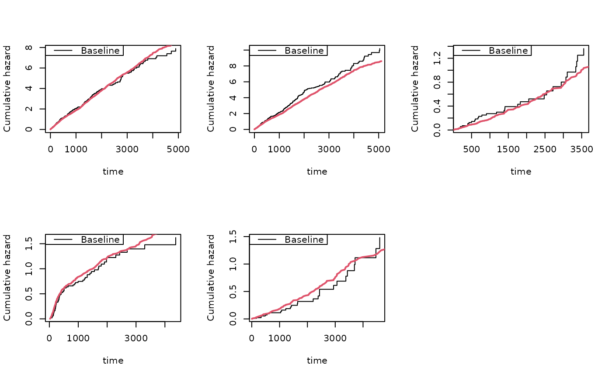
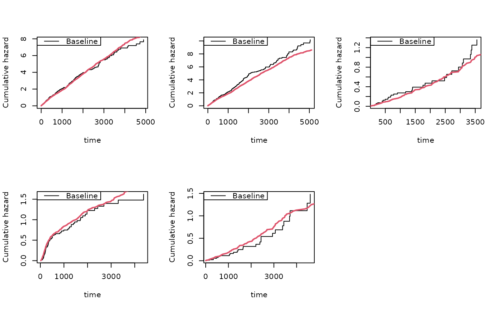

Simulation of recurrent events data based on cumulative hazards with two types of recurrent events
Source:R/recurrent.marginal.R
simRecurrentII.RdSimulation of recurrent events data based on cumulative hazards
Usage
simRecurrentII(
n,
cumhaz,
cumhaz2,
death.cumhaz = NULL,
r1 = NULL,
r2 = NULL,
rd = NULL,
rc = NULL,
dependence = 0,
var.z = 1,
cor.mat = NULL,
cens = NULL,
gap.time = FALSE,
max.recurrent = 100,
...
)Arguments
- n
number of id's
- cumhaz
cumulative hazard of recurrent events
- cumhaz2
cumulative hazard of recurrent events of type 2
- death.cumhaz
cumulative hazard of death
- r1
potential relative risk adjustment of rate
- r2
potential relative risk adjustment of rate
- rd
potential relative risk adjustment of rate
- rc
potential relative risk adjustment of rate
- dependence
0:independence; 1:all share same random effect with variance var.z; 2:random effect exp(normal) with correlation structure from cor.mat; 3:additive gamma distributed random effects, z1= (z11+ z12)/2 such that mean is 1 , z2= (z11^cor.mat(1,2)+ z13)/2, z3= (z12^(cor.mat(2,3)+z13^cor.mat(1,3))/2, with z11 z12 z13 are gamma with mean and variance 1 , first random effect is z1 and for N1 second random effect is z2 and for N2 third random effect is for death
- var.z
variance of random effects
- cor.mat
correlation matrix for var.z variance of random effects
- cens
rate of censoring exponential distribution
- gap.time
if true simulates gap-times with specified cumulative hazard
- max.recurrent
limits number recurrent events to 100
- ...
Additional arguments to lower level funtions
Details
Must give hazard of death and two recurrent events. Possible with two event types and their dependence can be specified but the two recurrent events need to share random effect. Based on drawing the from cumhaz and cumhaz2 and taking the first event rather the cumulative and then distributing it out. Key advantage of this is that there is more flexibility wrt random effects
Examples
########################################
## getting some rates to mimick
########################################
data(CPH_HPN_CRBSI)
dr <- CPH_HPN_CRBSI$terminal
base1 <- CPH_HPN_CRBSI$crbsi
base4 <- CPH_HPN_CRBSI$mechanical
######################################################################
### simulating simple model that mimicks data
######################################################################
rr <- simRecurrent(5,base1)
dlist(rr,.~id,n=0)
#> id: 1
#> entry time status dtime fdeath death start stop
#> 1 0.0000 963.6768 1 5110 0 0 0.0000 963.6768
#> 6 963.6768 3119.5944 1 5110 0 0 963.6768 3119.5944
#> 11 3119.5944 4161.9661 1 5110 0 0 3119.5944 4161.9661
#> 16 4161.9661 5110.0000 0 5110 0 0 4161.9661 5110.0000
#> ------------------------------------------------------------
#> id: 2
#> entry time status dtime fdeath death start stop
#> 2 0.000 2945.791 1 5110 0 0 0.000 2945.791
#> 7 2945.791 4728.124 1 5110 0 0 2945.791 4728.124
#> 12 4728.124 4792.550 1 5110 0 0 4728.124 4792.550
#> 17 4792.550 4825.609 1 5110 0 0 4792.550 4825.609
#> 21 4825.609 5110.000 0 5110 0 0 4825.609 5110.000
#> ------------------------------------------------------------
#> id: 3
#> entry time status dtime fdeath death start stop
#> 3 0.0000 581.1952 1 5110 0 0 0.0000 581.1952
#> 8 581.1952 3271.9495 1 5110 0 0 581.1952 3271.9495
#> 13 3271.9495 3426.2055 1 5110 0 0 3271.9495 3426.2055
#> 18 3426.2055 3460.4209 1 5110 0 0 3426.2055 3460.4209
#> 22 3460.4209 3640.4782 1 5110 0 0 3460.4209 3640.4782
#> 25 3640.4782 3964.2281 1 5110 0 0 3640.4782 3964.2281
#> 28 3964.2281 5110.0000 0 5110 0 0 3964.2281 5110.0000
#> ------------------------------------------------------------
#> id: 4
#> entry time status dtime fdeath death start stop
#> 4 0.00000 24.71568 1 5110 0 0 0.00000 24.71568
#> 9 24.71568 163.29496 1 5110 0 0 24.71568 163.29496
#> 14 163.29496 557.93512 1 5110 0 0 163.29496 557.93512
#> 19 557.93512 568.32318 1 5110 0 0 557.93512 568.32318
#> 23 568.32318 937.08625 1 5110 0 0 568.32318 937.08625
#> 26 937.08625 1189.38612 1 5110 0 0 937.08625 1189.38612
#> 29 1189.38612 2836.08064 1 5110 0 0 1189.38612 2836.08064
#> 31 2836.08064 3387.68824 1 5110 0 0 2836.08064 3387.68824
#> 33 3387.68824 3915.63445 1 5110 0 0 3387.68824 3915.63445
#> 34 3915.63445 4198.26243 1 5110 0 0 3915.63445 4198.26243
#> 35 4198.26243 5110.00000 0 5110 0 0 4198.26243 5110.00000
#> ------------------------------------------------------------
#> id: 5
#> entry time status dtime fdeath death start stop
#> 5 0.000 1898.229 1 5110 0 0 0.000 1898.229
#> 10 1898.229 2121.722 1 5110 0 0 1898.229 2121.722
#> 15 2121.722 2537.183 1 5110 0 0 2121.722 2537.183
#> 20 2537.183 2686.916 1 5110 0 0 2537.183 2686.916
#> 24 2686.916 4163.187 1 5110 0 0 2686.916 4163.187
#> 27 4163.187 4208.363 1 5110 0 0 4163.187 4208.363
#> 30 4208.363 4251.102 1 5110 0 0 4208.363 4251.102
#> 32 4251.102 5110.000 0 5110 0 0 4251.102 5110.000
rr <- simRecurrent(5,base1,death.cumhaz=dr)
dlist(rr,.~id,n=0)
#> id: 1
#> entry time status dtime fdeath death start stop
#> 1 0.0000 152.2163 1 435.3706 1 0 0.0000 152.2163
#> 6 152.2163 296.2847 1 435.3706 1 0 152.2163 296.2847
#> 8 296.2847 435.3706 0 435.3706 1 1 296.2847 435.3706
#> ------------------------------------------------------------
#> id: 2
#> entry time status dtime fdeath death start stop
#> 2 0 327.8463 0 327.8463 1 1 0 327.8463
#> ------------------------------------------------------------
#> id: 3
#> entry time status dtime fdeath death start stop
#> 3 0 244.4292 0 244.4292 1 1 0 244.4292
#> ------------------------------------------------------------
#> id: 4
#> entry time status dtime fdeath death start stop
#> 4 0.0000 398.9114 1 4068.001 1 0 0.0000 398.9114
#> 7 398.9114 1338.1707 1 4068.001 1 0 398.9114 1338.1707
#> 9 1338.1707 1752.8511 1 4068.001 1 0 1338.1707 1752.8511
#> 10 1752.8511 2447.4908 1 4068.001 1 0 1752.8511 2447.4908
#> 11 2447.4908 2771.2826 1 4068.001 1 0 2447.4908 2771.2826
#> 12 2771.2826 3153.4447 1 4068.001 1 0 2771.2826 3153.4447
#> 13 3153.4447 3560.7620 1 4068.001 1 0 3153.4447 3560.7620
#> 14 3560.7620 3631.8290 1 4068.001 1 0 3560.7620 3631.8290
#> 15 3631.8290 3831.3708 1 4068.001 1 0 3631.8290 3831.3708
#> 16 3831.3708 3987.6291 1 4068.001 1 0 3831.3708 3987.6291
#> 17 3987.6291 3997.3036 1 4068.001 1 0 3987.6291 3997.3036
#> 18 3997.3036 4068.0012 0 4068.001 1 1 3997.3036 4068.0012
#> ------------------------------------------------------------
#> id: 5
#> entry time status dtime fdeath death start stop
#> 5 0 162.112 0 162.112 1 1 0 162.112
rr <- simRecurrent(100,base1,death.cumhaz=dr)
par(mfrow=c(1,3))
showfitsim(causes=1,rr,dr,base1,base1)
######################################################################
### simulating simple model
### random effect for all causes (Z shared for death and recurrent)
######################################################################
rr <- simRecurrent(100,base1,death.cumhaz=dr,dependence=1,var.gamma=0.4)
dtable(rr,~death+status)
#>
#> status 0 1
#> death
#> 0 30 270
#> 1 70 0
######################################################################
### simulating simple model that mimicks data
### now with two event types and second type has same rate as death rate
######################################################################
set.seed(100)
rr <- simRecurrentII(100,base1,base4,death.cumhaz=dr)
dtable(rr,~death+status)
#>
#> status 0 1 2
#> death
#> 0 10 295 39
#> 1 90 0 0
par(mfrow=c(2,2))
showfitsim(causes=2,rr,dr,base1,base4)
## general case, 3 recurrent events and 2 causes of death
set.seed(100)
cumhaz <- list(base1,base1,base4)
drl <- list(dr,base4)
rr <- simRecurrentList(100,cumhaz,death.cumhaz=drl,dependence=0)
dtable(rr,~death+status)
#>
#> status 0 1 2 3
#> death
#> 0 4 232 268 33
#> 1 70 0 0 0
#> 2 26 0 0 0
showfitsimList(rr,cumhaz,drl)
 
